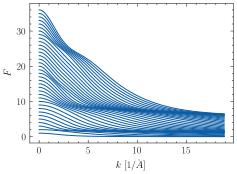

Note
Go to the end to download the full example code
Full atomic Formfactors according to Pauling and Sherman
This figure reproduces Fig.8 in [Pauling and Sherman, 1932] for elements up to \(Z=36\).

import matplotlib.pyplot as plt
import numpy as onp
from jpu import numpy as jnpu
import jaxrts
ureg = jaxrts.ureg
plt.style.use("science")
k = onp.linspace(0, 1.5, 400) * (4 * onp.pi) / ureg.angstrom
for Z in range(1, 37):
element = jaxrts.elements.Element(Z)
Zstar = jaxrts.form_factors.pauling_effective_charge(Z)
F = jnpu.sum(
jaxrts.form_factors.pauling_all_ff(k, Zstar)
* element.electron_distribution[:, onp.newaxis],
axis=0,
)
plt.plot(k.m_as(1 / ureg.angstrom), F, color="C0")
plt.xlabel("$k$ [1/$\\AA$]")
plt.ylabel("$F$")
plt.tight_layout()
plt.show()
Total running time of the script: (0 minutes 4.322 seconds)